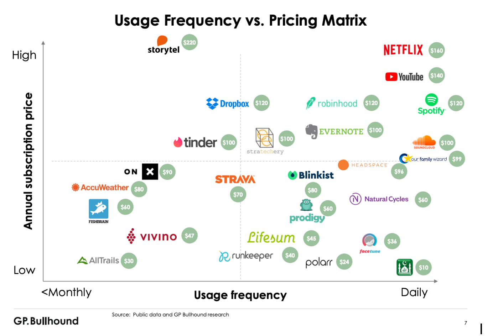
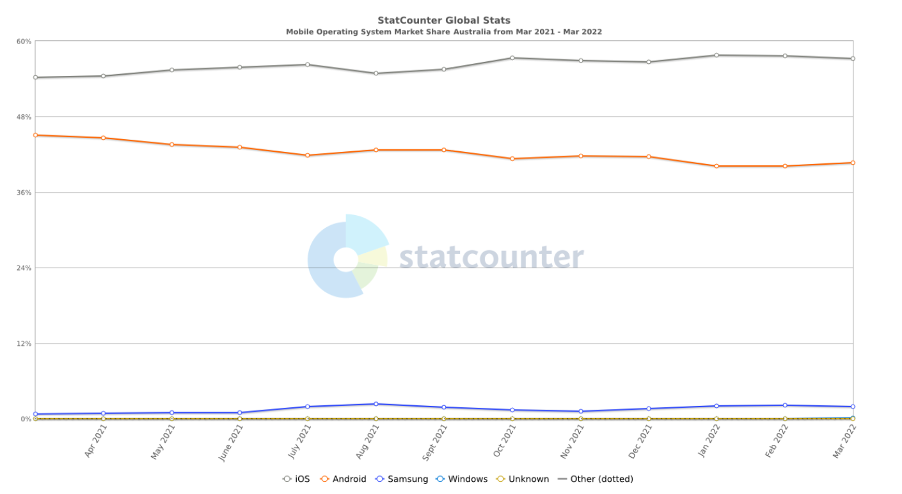

OVERVIEW
An android based application that allows GPS tracking and
telemetry data gathering to show statistics of sessions at
racetracks.. This app is driven by our passion for motorbikes and
racing. Users have access to features such as maps, personal race
data, social aspects, reward points, and links to riding guides
and videos. Safety functions are included, to prevent misuse and
promote safety, as well as help provide assistance in case of
emergency. The app aims to promote inclusivity of everyone able to
hop on a bike, and welcome them into the thrilling sport of riding
high powered motorbikes in track environments. An android based
application that allows GPS tracking and telemetry data gathering
to show statistics of sessions at racetracks. This app is driven
by our passion for motorbikes and racing. Users have access to
features such as maps, personal race data, social aspects, reward
points, and links to riding guides and videos. Safety functions
are included, to prevent misuse and promote safety, as well as
help provide assistance in case of emergency. The app aims to
promote inclusivity of everyone able to hop on a bike, and welcome
them into the thrilling sport of riding high powered motorbikes in
track environments.
MOTIVATION
Our motivation for this project comes from a place of passion for
racing and competitiveness. Surely that lap has got to be the
fastest anyone has ever seen?! Ol’ mate Mick couldn’t even come
close to that time on his ol’ 2 stroke from the 60’s! Whether
you’ve been riding motorbikes since you were young, looking to get
into it at an older age, or even just enjoy watching the MotoGP on
the TV, they are an area of interest for anyone. The excitement
that comes from the thrilling speeds that can be achieved, the
relaxation experienced on a slow ride through the hills, and the
edgy stunts performed in bush motocross all bring some kind of
inclusivity to the table. Acknowledging this broad spectrum of
riders has allowed us as a group to discover something in the
sport that each of us can relate to. We as a group, have a wide
interest in the racing, mechanical, advertising, social and
leisure aspects. Encouraging people to join the sport in one way
or another is the binding theme amongst us and pleases all
personalities of the group. This app will be our attempt to
deliver our passion for not only motorbikes, but inclusivity of
anyone and everyone capable.
DESCRIPTION
This application will have plenty of features ranging from data
collection and usage to reward systems and profiles for keeping
users active and interested in using the app. Below is a
comprehensive overview of each feature and justification.
OVERVIEW
An android based application that allows GPS tracking and
telemetry data gathering to show statistics of sessions at
racetracks.. This app is driven by our passion for motorbikes and
racing. Users have access to features such as maps, personal race
data, social aspects, reward points, and links to riding guides
and videos. Safety functions are included, to prevent misuse and
promote safety, as well as help provide assistance in case of
emergency. The app aims to promote inclusivity of everyone able to
hop on a bike, and welcome them into the thrilling sport of riding
high powered motorbikes in track environments. An android based
application that allows GPS tracking and telemetry data gathering
to show statistics of sessions at racetracks. This app is driven
by our passion for motorbikes and racing. Users have access to
features such as maps, personal race data, social aspects, reward
points, and links to riding guides and videos. Safety functions
are included, to prevent misuse and promote safety, as well as
help provide assistance in case of emergency. The app aims to
promote inclusivity of everyone able to hop on a bike, and welcome
them into the thrilling sport of riding high powered motorbikes in
track environments.
MOTIVATION
Our motivation for this project comes from a place of passion for
racing and competitiveness. Surely that lap has got to be the
fastest anyone has ever seen?! Ol’ mate Mick couldn’t even come
close to that time on his ol’ 2 stroke from the 60’s! Whether
you’ve been riding motorbikes since you were young, looking to get
into it at an older age, or even just enjoy watching the MotoGP on
the TV, they are an area of interest for anyone. The excitement
that comes from the thrilling speeds that can be achieved, the
relaxation experienced on a slow ride through the hills, and the
edgy stunts performed in bush motocross all bring some kind of
inclusivity to the table. Acknowledging this broad spectrum of
riders has allowed us as a group to discover something in the
sport that each of us can relate to. We as a group, have a wide
interest in the racing, mechanical, advertising, social and
leisure aspects. Encouraging people to join the sport in one way
or another is the binding theme amongst us and pleases all
personalities of the group. This app will be our attempt to
deliver our passion for not only motorbikes, but inclusivity of
anyone and everyone capable.
DESCRIPTION
This application will have plenty of features ranging from data
collection and usage to reward systems and profiles for keeping
users active and interested in using the app. Below is a
comprehensive overview of each feature and justification.
The core use of this app will centre around the actual movement of the phone with the user. When the user begins their session, the app will record relevant data until the user stops the recording. The user would press a 'start recording' button to begin this session. The user will be able to configure this option so that recording begins immediately. As a default option, recording will not begin until 15 seconds have passed. This will give the user time to press the button, store the phone, check their jacket, gloves and helmet, and leave the pits to reach the track. After the app begins recording and tracking telemetry data, it would continue doing so until the user stops the bike and presses the 'stop recording' button or until a condition has been reached. Some examples of conditions that would be configurable are after a certain number of successful laps around a track or a time limit. An average amount of laps and time of the session on a recreational ride day would be ~10 laps and ~15 minutes, and these would be default values.
As the application requires the tracking of telemetry data produced by the bike's movement, the phone must have some attachment to the rider or bike. The simple solution is to store the phone in a jacket pocket, preferably with a zipper, to ensure the phone does not fall out.
After the jacket is zipped up, it is secure enough to stay firm against the body so as not to flop around. Depending on the position of the pocket, it should not hinder rider movement or comfort. Consideration of rider movement on the bike must be taken into account, as an excessive movement of the rider, such as leaning left and right over the bike or moving forward and backward adjusting to required body positioning, may affect some telemetry data such as lean angle and g-forces. Although these differences in readings would be minor, the phone may also be mounted on a sticky bracket with a secure phone holder, wherever it is safe to install on the bike. This may be situated on the bike's tank, which is the most commonplace, or near the dash cluster, so long as the vision of the road or any necessary instruments are not impaired.
As users are required to use gloves when riding on a track, this can be an impairment when operating the app. Most android phones have an extra sensitivity function for when users wear gloves. However, the app will not be allowed to be used when the rider is in motion, only when the rider is stopped. Therefore it is a given that riders will usually remove gloves to operate phones. Adding to the subject of the device used in motion, the application will have a 'lockout' mode that prevents the app from interacting when it detects a speed above 6kph. This speed is set to allow the use of the app still whilst walking, as 6kph is the average walking speed.
The application will utilise the phone's GPS or an external Bluetooth GPS to record the user's location data. The app will be able to utilise this GPS data to display where the user is and their previous locations on a map.
This will allow the user's speed to be determined using distance/time maths. The top and average speeds will be calculated for each session and each lap. The import and creation of verified and custom track maps will be included in the app. These maps will have specific points that indicate turns, straights, and specific locations key to each track to identify the track itself. As a user passes these points, all data collected at that point will be logged. Once the finish line point is passed, a new lap will have started, and all data in that lap will be recorded as the corresponding lap number. This will allow the user to quickly see specific lap data without hunting through the whole session data.
Accelerating values can also be calculated by tracking distance, speed, and time. This feature will require a higher polling rate GPS module to be accurate. The highest and average acceleration and deceleration values will be recorded for each lap and session and can be seen at any point. Users will look for some vital information out of corners and on the main straight. G-force is a data value that can be pulled from a phone's gyroscopic sensors at specific points, which users will want when braking and accelerating. G-forces will show how much gravitational force is on the rider as they make sudden changes in acceleration and when cornering.
As mentioned earlier, a map import and creation feature will be included. This will allow the user to pick a track map out of a list or search and import the map and included map points.
This will show the map as an overhead satellite view or map view, with set pins indicating specific points of the map, such as the start and finish of corners, straights, finish lines and other key points of that track.
The user will be able to drop extra pins where they like, enabling data to be recorded as the user passes them and allowing for more accurate data values calculated using these points. These now custom maps can be uploaded/exported for others to use. After a session, this track map will have a visual element that indicates where the user was on the track and at what time. Touching any part of this overlay will bring up the 'lap choice' menu, allowing the user to see data about that point on specific laps. The overlay will also indicate red for deceleration and green for acceleration over the track.
Suppose the user finds a track not included in any verified or custom maps. In that case, the user can drop pins over the map to create a custom version. This can be uploaded as a custom map or submitted for verification as a verified track. For a map or track to be verified, it will be assigned to a verification manager who will look at two criteria. These criteria are: authentic, meaning it does not run on any private properties without consent, and the track has on-site medical attention, and notable, meaning multiple people had used the track before and rated it highly. Initially, verified tracks will be deployed and updated by our team regularly. Then, the responsibility will be passed down to Verification Managers. A Verification Manager is a manually chosen long time user with no negative marks against their account for misuse of the app, breaching any disclaimers or breaking the app's terms and conditions.
As our application will be collecting personal information and data from users, we will be adopting a PBD (Privacy by Design) approach, which is a strategic process that 'embeds good privacy practices into the design specifications of technologies' (OAIC, n.d, para. 1) or in other words, being proactive opposed to reactive. This will comply with the Australian Privacy Act 1988. We will be implementing a privacy policy for data collection, which will include our registered company name, what data is being collected, how it is used and where it is stored, the reasons why we are collecting the information, how a user can access their personal information or ask for a correction or have their data deleted. We will not require age limits to use our application outside of the standard ratings on Google's app store as 'The Privacy Act sets no minimum age at which an individual can make decisions regarding his or her personal information.' (para. 4)
We will be collecting the following data:
Location data - to enable the use of the geolocation tracking features of the application
Name
Date of Birth - to allow users the option to opt in to display their age on their profile
Email address - for users to have a login and also for opt-in marketing and promotional material
Phone number - for user account password resets as well as enabling the emergency contact feature
This data will be stored securely within our Google Firebase database, using server-side encryption. This encryption is '256-bit Advanced Encryption Standard and each encryption key is itself encrypted with a regularly rotated set of master keys.' (Google Cloud, n.d. para. 2)
Our application will have a disclaimer that will prompt the user to accept every time they open up the application. This disclaimer will limit our liability for external and internal misuse of the application, bugs and incorrect information. This will state that users will use this app at their discretion. It will also limit liability for any accident or injury while using the app. Furthermore, it will make a statement that all third party links and information available within our application are not our responsibility. They may contain copyrighted information out of our control. Lastly, it will display basic safety instructions such as not riding under the influence and using PPE correctly.
Along with a disclaimer, we will also require the application to have terms and conditions which must be accepted upon the user signing up. This is to further build on the disclaimer to limit liability and set the rules and community guidelines such as harassment, abuse and violating a person's legal rights. Included will also make users agree not to violate our company's intellectual property or any third party and not publish or post any explicit, unlawful, obscene or defamatory material.
We will be adding a feature that enables users to assign a phone number as their emergency contact. Suppose specific parameters are met, such as rapid deceleration, massive g-forces, upset stability, and GPS location off track. In that case, an emergency notification message can be sent. This can have a custom message or the default, including the user's name, location and last known top speed and g-force in the few seconds before the incident. This feature will be disabled while the user is on a verified track because verification criteria are that the track has on-site medical attention.
We aim to make this app as user friendly as possible, so people from all backgrounds and experiences will be able to have a fun and engaging experience. There will be social interactions within the app to achieve this goal, such as allowing the user to sign up and create a profile. Upon profile creation, we would like users to choose an avatar that closely represents them and then choose a vehicle type and model they own.
As our main product is an Android app, it will be distributed via the Google Play Store. Users will be able to download a free trial version of the app as well as pay to subscribe to the full paid version. Payments will be managed via Google Play’s billing system. Our research shows that 97% of the apps in the Google Play store are free (Ceci, 2022).
Due to the price sensitivity of Android app users, this is where a freemium subscription model will be effective. Users will be able to try out the app functionality, create a profile and track 5 separate track runs. This will allow the user to get a feel for the app benefits and ease of use. Once the user reaches the maximum number of free tracking sessions they will be prompted to upgrade by signing up to a subscription plan. A trial/freemium pricing strategy has been shown to be an effective way to boost sales of a paid app. App users pay less attention to the app review ratings when they have a chance to experience the app for themselves. (Liu et al, 2015).
There is a trend towards app developers shifting from charging a one-off fee to a subscription model. Smartphone users in developed markets like the US spend on average $33 a month on app subscriptions including streaming services (Lovejoy, 2020). After doing some research it was decided to launch the app offering users upgrading from the trial to the full version an option to pay AUD 10.00 per month, and an offer to pay only 8.00 a month (a discount of 20%) if the opt for the annual subscription paying AUD 96.00 per year.
We plan to have the option for users to customise their profile with stats displaying such as their fastest times or top speeds at verified tracks. Users will also be able to favourite tracks and leave reviews, which can be shown on profile tabs. We will be implementing a follow option for users to follow their friends or well-known users of our application, with push notifications being an opt-in for when someone a user follows is active on the app. We will also be implementing an achievements area on user profiles that can display trophies earned, such as 'fastest time overall on a track' and 'most completions overall on a track.' Badges will also be used, displaying badges like 'amount of tracks created overall' and 'amount of tracks completed in a month.' We would like to have a currency system for users so that they can buy items to customise their profiles. These items would not be obtainable outside our in-app currency and will make profiles stand out more. These profile items could be borders, gif avatars, props for user avatars, or different shaped profile boxes. The idea behind this would be for a regular user to see a more invested user profile on forum boards or in our 'Top Monthly User' write-up and want to engage with the app more to obtain these items. Our currency, named ‘Traqstarz’ will be earned for accumulative stats such as speeds reached and kilometres tracked. There will be thresholds in each category where users will gain currency upon reaching. Users can post live streams or recorded footage of themselves on tracks via Youtube. A reporting feature will ensure that users do not post harmful or violent imagery.
Hosting a discussion board will be an excellent way for our users to interact and gain knowledge from each other. The 'Top Monthly User' section will be focused on one selected user, who will be chosen under specific criteria such as most active, most completed tracks or most forum interaction for that month. Being given this title at least once will unlock a crown icon that will be displayed on the user's profile to show off. We want to welcome everyone who has a passion for racing. To help our beginner racers, we decided to have a specific section on tips and information on how to get started for beginners and a News and Articles section. This information could be helpful for everyone. We want to include advice on what type of gear and brands to invest in, training and courses available to attend in each Australian state and vehicle suggestions. We want our app to feel like a community where users can learn new things, interact, and participate in the recreational activity they enjoy most.
By incorporating gear recommendations, we will be able to make sure everyone involved in our application will have the tools to be as safe as possible. As the times change, so do gear standards in terms of safety. In Australia, motorcyclists are required to wear an approved helmet that adheres to the Australian (AS1698 or AS/NZ1698) standard. Not only do these protect from incidents, but by having shatterproof visors and goggles, it creates a defence from rough weather, insects and stones. Alongside helmet recommendations, we will have an up-to-date list and guide of what and where to find the safety gear you need.
We will be sourcing this information from the website webbikeworld as it aligns with the applications needs. Not only does it provide gear and bike reviews, it has plenty of current news articles and gear guides to keep your search short and successful. A specific brand that will be recommended as a base for your biking gear needs, is Alpinestars. Alpinestars was first established in 1963 and has become a world-leading manufacturer of high-performance motorbike related products. From gloves to boots, what they design has been proven to meet not only the safety standards but to also look and feel slimline and as ergonomic as possible.
Regarding sponsors, we will be focusing on tracks themselves. This will provide more information on said tracks, as well as give those companies the opportunity to reach more of an audience and space for more customers. By having these sponsors on board and bringing in more people to use their tracks, there is an opportunity for the user to find competing challenges to gain more trophies and to make more like minded friends.
 We plan to have the option for users to customise their profile with stats displaying such as their fastest times or top speeds at verified tracks. Users will also be able to favourite tracks and leave reviews, which can be shown on profile tabs. We will be implementing a follow option for users to follow their friends or well-known users of our application, with push notifications being an opt-in for when someone a user follows is active on the app. We will also be implementing an achievements area on user profiles that can display trophies earned, such as 'fastest time overall on a track' and 'most completions overall on a track.' Badges will also be used, displaying badges like 'amount of tracks created overall' and 'amount of tracks completed in a month.' We would like to have a currency system for users so that they can buy items to customise their profiles. These items would not be obtainable outside our in-app currency and will make profiles stand out more. These profile items could be borders, gif avatars, props for user avatars, or different shaped profile boxes. The idea behind this would be for a regular user to see a more invested user profile on forum boards or in our 'Top Monthly User' write-up and want to engage with the app more to obtain these items. Our currency, named ‘Traqstarz’ will be earned for accumulative stats such as speeds reached and kilometres tracked. There will be thresholds in each category where users will gain currency upon reaching. Users can post live streams or recorded footage of themselves on tracks via Youtube. A reporting feature will ensure that users do not post harmful or violent imagery.
Hosting a discussion board will be an excellent way for our users to interact and gain knowledge from each other. The 'Top Monthly User' section will be focused on one selected user, who will be chosen under specific criteria such as most active, most completed tracks or most forum interaction for that month. Being given this title at least once will unlock a crown icon that will be displayed on the user's profile to show off. We want to welcome everyone who has a passion for racing. To help our beginner racers, we decided to have a specific section on tips and information on how to get started for beginners and a News and Articles section. This information could be helpful for everyone. We want to include advice on what type of gear and brands to invest in, training and courses available to attend in each Australian state and vehicle suggestions. We want our app to feel like a community where users can learn new things, interact, and participate in the recreational activity they enjoy most.
By incorporating gear recommendations, we will be able to make sure everyone involved in our application will have the tools to be as safe as possible. As the times change, so do gear standards in terms of safety. In Australia, motorcyclists are required to wear an approved helmet that adheres to the Australian (AS1698 or AS/NZ1698) standard. Not only do these protect from incidents, but by having shatterproof visors and goggles, it creates a defence from rough weather, insects and stones. Alongside helmet recommendations, we will have an up-to-date list and guide of what and where to find the safety gear you need.
We will be sourcing this information from the website webbikeworld as it aligns with the applications needs. Not only does it provide gear and bike reviews, it has plenty of current news articles and gear guides to keep your search short and successful. A specific brand that will be recommended as a base for your biking gear needs, is Alpinestars. Alpinestars was first established in 1963 and has become a world-leading manufacturer of high-performance motorbike related products. From gloves to boots, what they design has been proven to meet not only the safety standards but to also look and feel slimline and as ergonomic as possible.
Regarding sponsors, we will be focusing on tracks themselves. This will provide more information on said tracks, as well as give those companies the opportunity to reach more of an audience and space for more customers. By having these sponsors on board and bringing in more people to use their tracks, there is an opportunity for the user to find competing challenges to gain more trophies and to make more like minded friends.
TOOLS AND TECHNOLOGIES  To help decide on which app store to start off with we compared statistics for the two major mobile operating systems, we found that in Australia Android has a market share of 40.72% as at March 2022, while iOS is most popular with a market share of 57.23%. The statistics shift dramatically once you analyse the global market as a whole. Globally, Android has a market share of 71.7% as at March 2022, while iOS has attained a market share of only 27.57%. Among developers, the Google Play store is also significantly more popular with 3.48 million apps available for download as at the first quarter of 2021, compared to just 2.22 million available apps available in the Apple App Store (Ceci, 2022).
Costs are another important factor. Publishing an app on the Apple app store requires registration to the Apple Developer Program which has a cost of USD 99.00 per year. Publishing an app on the Google Play store requires registering for a Google Play Developer Account, and this comes with a one-off fee of USD 25.00. This makes the Google Play Store a much more cost effective solution (Girdhar, 2021).
The steps involved in getting an app published on the Google Play Store include:
Create a Developer Account
Create Payments Centre Profile
Create an App
Prepare Store Listing such as product details, graphic assets, languages and translations, categorization, contact details, privacy policy, and others required
Upload Android Package Kit to an App release
Provide content rating
Set up Pricing and Distribution
Rollout Release to Publish Your App
(Girdhar, 2021).
The language that this program will be written in is Java, as it is simply object oriented and can be easy to understand. As this is a first time project, using such a language is ideal.. This application will have its beginnings running on Android devices, so a language that works well with Android framework is ideal. Java is the native coding language for Android applications and is supported by Android Studio, however it has a steep learning curve..
For any reason that Java can not be used, an alternative is Python. Kivy is an open source Python library integrating Android framework for mobile applications. Kivy allows for codeable button interfaces using built in functions, which will be useful for building the app interface.
Android devices come equipped with internal GPS modules, which are great for general maps and location use, however the polling rate of these GPS’s are typically 1Hz. This means that the GPS’s unit only pings once every second, which is a good balance between usefulness and battery usage in normal situations.
However in high speed circumstances, in 1 second at 250 kph, you would travel 70m. That is a huge distance at those speeds and does not provide the accuracy required from the GPS. The answer is to utilise a 10 Hz GPS module, meaning a ping every 0.1s. These modules range from ‘$100AUD’(qStarz, n.d) and upwards, which is a justifiable investment for those serious about the sport, although the application will still have some degree of accuracy without an external GPS. These external GPS’s connect to the phone via bluetooth, and will be required to be with the rider/bike during a recording session.
For maps, pins and map points, we would utilise an open-source JavaScript library such as Leaflet© which also implements map data and satellite imagery using OpenStreetMaps©.
Being able to leverage an open-source platform, this allows for not only flexibility in building our platform but also a very cost effective strategy without the need to licence maps from providers such as Google. Leaflet maintains very lightweight JS code and has the majority of the mapping features already built in that we would need to use.
For our news and article section we would use RSS feeds of popular motorbike and motorsports and add them to our application. We would not be using all of our articles and news from just one site and we would make sure to properly link to the original article as well as only provide snippets of the articles on our news and articles page, meaning when the user wants to read more they have to click on an article and will be taken to the original source article.
SKILLS REQUIRED To start, the coding skills required for this project would be knowledge in the Java or Python language, depending on which is chosen to be utilised. Being able to write a program and know how to efficiently execute appropriate functions and recover from run time errors is key to the success of this project. Another requirement is the knowledge of how to pull certain data from the android framework, such as the many sensors that will be utilised within the android phone.
Understanding of how these sensors work is also highly recommended, to be able to confidently use the gyroscopic and accelerometer data without problems, and the maths behind them in case calculations are required. With the integration of Leaflet, we need to learn how to gain access to OpenStreetMaps satellite imagery of the tracks that users will be using, as well as downloading and importing these to the app. We will need to read up on how to use Google Firebase as this is where we will host and build our application as Google Firebase offers a free option with some capacity and traffic limitations, however we are unlikely to reach these limits. Specifically how to properly utilise Google Firebases's database.
OUTCOME With the success of this project, users will be able to accurately track lap times, speed, and acceleration at specific times and locations around a track. This data will be able to be reviewed after a session, with comparison data available. Detailed data can be saved, shared, deleted, and viewed by others. The application will include the ability to add and track your friends via a profile system which the user can keep updated with an avatar, favourite bike, favourite track, and even best times for each track. The app can link to helpful videos and schooling for beginner riders, as well as current news and articles in the racing world. A reward system will be implemented where the user can earn trophies for top times or most completions on verified tracks, badges for stat tracking such as ‘five tracks completed in May’ or ‘two tracks made in May’ and currency for participating in events and accumulative stats such as kilometres tracked, speeds reached at verified tracks and tracks visited. The currency, which we are naming ‘Traqstarz’ can be used to purchase profile additions that aren’t available normally. The target audience for this application is going to be for those passionate riders who can make full use of the app, and those just beginning their journey into the world of motorbikes and related events. The use of the app will help users to ride their best and experience the joy that comes with thrilling speeds and the flow of a racetrack.